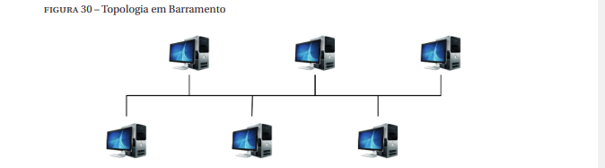
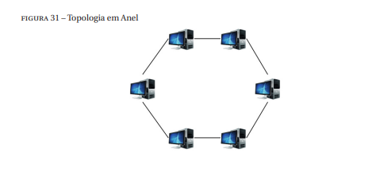
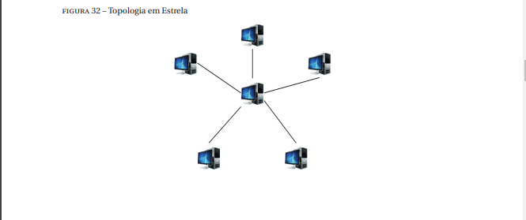
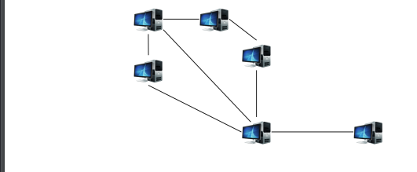
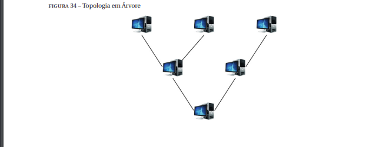
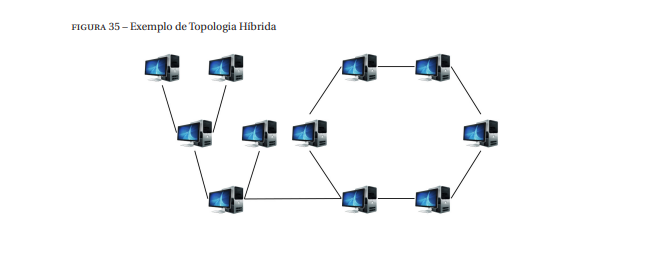

Existem dois tipos de topologias, física e lógica
A topologia física representa a disposição física dos componentes da rede de computadores e seus meios de comunicação. A topologia lógica compreende na descrição da comunicação dos nós da rede por meio dos meios de comunicação, ou seja, descreve principalmente no fluxo dos dados
Existem oito principais tipos de topologias utilizadas nas redes de computadores, sendo elas: a ponto a ponto, barramento, anel, estrela, malha, árvore e híbrida. As próximas subunidades abordam cada um destes tipos de topologias.
A topologia ponto a ponto consiste na forma mais básica de interconexões de computadores, onde um par de computadores são interligados diretamente através de um meio de transmissão.
A topologia ponto a ponto pode ser empregada apenas para prover a conectividade entre dois dispositivos ou em redes de comunicação par a par. Em algumas situações, pode ser interessante interligar dois dispositivos diretamente para trocar dados. Este modelo assume a disponibilidade do servidor e a inexistência de ataques cibernéticos ou falhas de operação contra este componente. No entanto, as ameaças cibernéticas são um problema real e podem existir falhas no servidor em decorrência da falta de energia ou avarias de componentes internos. As redes P2P objetivam contornar este problema ao interconectar logicamente os pares. Seguindo neste modelo, cada nó da rede pode atuar como cliente ou servidor, ou seja, pode compartilhar ou adquirir conteúdo ao mesmo tempo. Nesse caso, mesmo que existam conexões físicas com topologias diferentes de ponto a ponto, a forma como os dados são trocados obedecem a topologia ponto a ponto.
voltar ao topoNesta topologia existe um barramento físico de dados, no qual todos os computadores precisam se conectar para se comunicar. Esta topologia consiste em uma das mais utilizadas. Uma característica importante das redes que utilizam fisicamente esta topologia consiste na forma como os nós da rede recebem e enviam informações. Para enviar dados, primeiramente um computador precisa averiguar se o barramento está disponível, pois apenas uma mensagem pode ser transportada por vez.
Devido às propriedades específicas de recebimento e envio de mensagens, as redes organizadas fisicamente em topologia barramento necessitam de mecanismos de controle de acesso ao meio e técnicas para evitar colisões de pacotes na rede. Esses mecanismos podem ser classificados em três grupos, acesso particionado, acesso aleatório e acesso ordenado.
Os protocolos de acesso particionado empregam técnicas para permitir que mais de uma mensagem sejam enviadas ao mesmo tempo no barramento ao variar a frequência, tempo ou empregando codificações. Exemplos de protocolos que implementam o acesso particionado consistem no FdmA (Frequency Division Multiple Access), TdmA (Time Division Multiple Access) e CdmA (Code Division Multiple Access). Uma limitação dos mecanismos de acesso particionado é a subutilização do barramento quando uma das partes envolvidas não possui dados para enviar. Os protocolos de acesso aleatório contornam esse problema permitindo que um computador transmita dados sempre que necessário. Dentre estes protocolos pode-se citar o protocolo AloHA e CsmA (Carrier Sense Multiple Access). Todavia, utilizando esses protocolos, surge o risco de colisões de pacotes. Esse evento ocorre sempre que dois ou mais computadores verificam ao mesmo tempo que o barramento está livre e enviam os dados simultaneamente. Nessa situação, os sinais elétricos que representam os dados se chocam no meio físico, impossibilitando sua transmissão. Visando superar a colisão de pacotes, surgiram os protocolos de acesso ordenado. Nesse caso, definem uma ordem que os computadores devem utilizar o barramento. Exemplos de protocolo de acesso ordenado consistem no Polling e Token. Apesar de contornar o problema de conflito de pacotes no barramento, os protocolos de acesso ordenado também ocasionam a subutilização do barramento sempre que um componente responsável por transmitir não possui dados para enviar, assim como ocorre com os protocolos de acesso particionado. As principais aplicações da topologia física de barramento consistem nas redes com cabos coaxiais, redes sem fio e redes de fibra óptica. As redes com cabos coaxiais eram vastamente usadas nos primórdios das redes de computados e possuíam um cabo único que percorria toda a extensão física da rede, representando o barramento. Sempre que havia a necessidade de inserir um novo computador na rede, esse cabo era cortado e um conector em formato de “T” era usado para conectar as pontas do cabo original com o novo computador. No caso das redes sem fio, o barramento consiste no ar. Em algumas configurações, as redes de fibra óptica também utilizam a topologia de barramento.
volte ao topoNa topologia física anel, os computadores estão organizados em série, formando um circuito fechado. Quando uma mensagem é envida na topologia anel, a mensagem circula na rede até chegar ao destino ou até voltar ao seu emissor. Devido a esta característica, vantagem da topologia anel consiste na facilidade de uma mensagem ser entregue a todos os demais computadores de uma rede.
Todavia, a topologia em anel também apresenta desvantagens em relação às falhas e ao atraso no processamento de dados. Os enlaces que interligam os dispositivos e os próprios dispositivos da rede não são imunes a falhas. Nessas situações, o funcionamento da topologia se torna comprometido, pois deixa de existir o circuito que interliga os computadores. Uma forma de contornar este problema consiste em utilizar um computador com a responsabilidade de monitorar os demais dispositivos da rede e gerar eventos sempre que eles deixarem de operar corretamente A topologia em anel também apresenta limitações quanto ao atraso no processamento de dados.
A razão deste atraso surge em virtude das características do protocolo de controle de acesso ao meio utilizado em redes organizadas nesta topologia, o protocolo Token Ring. Assim, como ocorre na topologia em barramento, o controle de acesso ao meio se torna muito importante na topologia em anel para determinar qual estação pode transmitir em um dado instante para evitar a colisão de dados na rede. Para resolver este problema, a ideia básica do protocolo Token Ring consiste em utilizar um token que deve ser repassado sequencialmente entre ATENção: a função dos repetidores consiste em retransmitir os dados de uma origem para o destino em uma única direção de forma a diminuir possíveis efeitos da distorção e atenuação dos sinais transmitidos que representam os dados. os computadores da rede. Todavia, caso exista um grande número de computadores na rede, o tempo de repassar o token na rede ocasiona um atraso nas estações que possuem dados a transmitir e precisam aguardar o recebimento do token.
o recebimento do token sinaliza que uma estação da rede pode transmitir seus dados. Seguindo essa abordagem, o protocolo elimina a ocorrência de colisões de pacotes. Apesar dessas limitações, a topologia em anel atualmente é empregada em algumas configurações das redes de fibra óptica. Devido às suas propriedades físicas, as redes de fibra óptica possibilitam taxas de transferências muito mais altas do que os demais meios físicos. Inclusive, atualmente se desconhece a capacidade máxima obtida por meio deste meio de transmissão.
volte ao topoEm uma rede de computadores organizada por meio de uma topologia estrela, toda a informação gerada pelas estações de trabalho deve passar por um nó central. Em uma rede de computadores organizada por meio de uma topologia estrela, toda a informação gerada pelas estações de trabalho deve passar por um nó central. Nesta topologia, sempre que um computador deseja enviar pacotes para um determinado destino, esses dados deverão obrigatoriamente passar pelo nó central. Na sequência, o nó central possui informações como repassar as informações para os demais computadores da rede
A topologia em estrela consiste em uma das topologias mais utilizadas atualmente. A maioria das redes LANs, seja de um escritório, uma casa ou uma universidade, possuem um conjunto de computadores que estão diretamente conectados a um roteador, switch ou hub para trocar dados. A diferença entre um roteador, switch e um hub consiste nas suas funcionalidades.
Usando um switch, o pacote é recebido por uma porta e é encaminhado apenas para a porta em que se encontra o computador de destino. Enquanto que a função de um roteador consiste em processar o pacote e determinar sua rota, sempre que necessário. Além disso, muitos roteadores oferecem funcionalidades complementares, tais como o gerenciamento dos dispositivos das redes e da criação de redes virtuais. Apesar dessas diferenças, os hubs, switches e roteadores operam de maneira similar em uma topologia em estrela, interligando os dispositivos da rede e encaminhando o tráfego de uma origem para um destino. No caso das LANs, normalmente os roteadores, switches ou hubs também são conectados com um provedor de serviços de Internet, permitindo que os computadores da LAN possam acessar serviços disponibilizados na Internet.
Existem vantagens e desvantagens de empregar a topologia estrela. As principais vantagens consistem na facilidade de adicionar novos computadores, centralização do gerenciamento e a falha de um computador das bordas não afeta os demais computadores na rede. Além disso, como todas os computadores posicionados nas extremidades da topologia apenas enviam e recebem os pacotes, caso ocorra uma falha nestes dispositivos, a rede continuará a operar sem problemas. Todavia, a desvantagem de organizar a rede por meio desta topologia consiste na possibilidade de falha do ponto central.
volte ao topoUma rede de computadores organizada em topologia em malha possui duas propriedades principais, os dispositivos podem se comunicar entre si, desde que ambos estejam ao alcance um do outro. Usando essa organização, um dispositivo normalmente possui vários caminhos para acessar os demais dispositivos da rede, gerando assim maior resiliência da rede em nível de falhas de enlaces
Devido às características da topologia em malha, diz-se que a mesma consiste em uma rede ad-hoc, sendo normalmente empregada em redes sem fio. Em uma rede ad-hoc, cada nó opera como um roteador, recebendo um pacote e encontrando o melhor caminho dentro da rede para alcançar o destino.
A principal aplicação da organização física de computadores em malha, ocorre com em redes sem fio. Uma rede sem fio tradicional, normalmente possui um ponto de acesso central, onde todos os demais dispositivos se conectam para acessar a Internet, compreendendo em uma topologia em estrela.
Apesar da existência dos pontos fortes da topologia em malha, também existem problemas relacionados com esta forma de organização. Como consequência, a rede como um todo apresenta uma degradação de desempenho, podendo prejudicar a qualidade dos serviços oferecidos por meio dela. Outro problema com a utilização desta topologia consiste na perda de desempenho em função do número de saltos na rede. A realização de um salto na rede implica em um custo computacional e quanto mais saltos forem necessários, maior será o custo total da comunicação.
Uma rede de computadores organizada fisicamente por meio da topologia em árvore possui uma estação central, onde todas as demais estações se conectam.
Diferentemente da topologia estrela, que prevê a interligação apenas com um dispositivo centralizado, a topologia em árvore permite que as estações conectadas à estação central também se conectem com outras estações. Todavia, diferentemente da topologia em malha, a topologia em árvore não permite a existência de conexões fechando circuitos, ou seja, não existe a possibilidade de um pacote percorrer pelo menos três estações, de modo que o primeiro e o último computador sejam os mesmos
Essa topologia apresenta pontos positivos e negativos. Como por definição, esta representação não permite a existência de ciclos, elimina-se a possibilidade de um pacote permanecer em loop na rede, ocupando desnecessariamente os recursos de banda
volte ao topoA topologia híbrida em uma rede de computadores combina aspectos de duas ou mais topologias estudadas até o momento. Por exemplo, podemos ter uma topologia híbrida combinando a topologia anel com a topologia em árvore
A topologia híbrida consiste na mais utilizada em grandes redes de computadores. Esse fato ocorre em função da interconexão das redes existentes para formação de redes de larga escala. A Internet consiste em um exemplo de uma rede de larga escala, essa rede surgiu por meio da agregação de vários tipos de redes
Devido a essa propriedade, cada rede interconectada possui suas próprias necessidades de interconexão, políticas de segurança e serviços oferecidos, ocasionando consequentemente em tipos de topologias específicas para atender essas necessidades. Logo, devido a estas características, existiam diferentes topologias interconectadas para formar a Internet
voltar a pagina anterior modelos de organizaçao em camadas